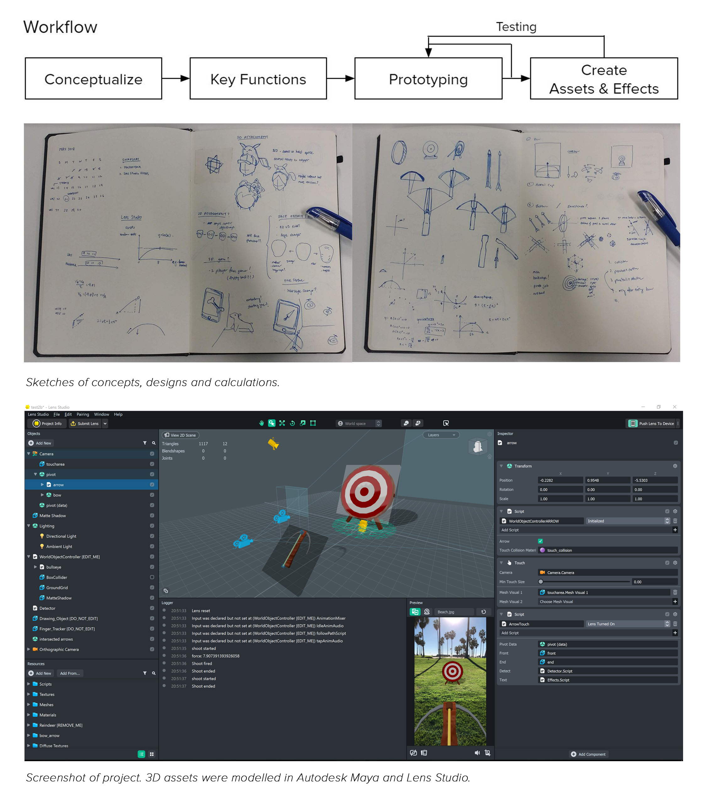
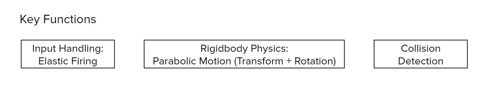

Snapchat: Crossbow Lens
Aim your phone, pull back the arrow and release to shoot at the bullseye board in AR!
The Design/Development Process
I decided on the crossbow AR filter as it required not only an understanding of Lens Studio features & components, but also the need to implement custom components.
Custom Script Components
These key features are the features that need to be achieved through custom scripts.
Input Handling: Elastic Firing
The user is able to pull the arrow back with his finger, and fire it on release. The arrow is subjected to an elastic force mimicking the bowstring, hence the arrow pullback distance should decrease logarithmically as the user's finger pull distance increases. If the pullback is minimal, the arrow should reset on release, instead of firing.
This finger motion is a recreation of the actual bow arrow firing motion. Recreating a realistic motion is important in keeping the illusion of reality in AR space.
//arrow pullback is subjected to a logarithmic increase
function moveTouch() {
var curTouchPos = touchMoveEvent.getTouchPosition();
totalTouch -= (prevTouchPos.y - curTouchPos.y)*100;
prevTouchPos = curTouchPos;
outForce = 2*Math.log(2*totalTouch); //logarithmic mapping
var newPos = originPos.add(forward.uniformScale(-outForce));
transform.setLocalPosition(newPos);
}
//on tap release, fire arrow
function endTouch() {
if (shooting) return;
if (outForce <2 ) { //if below min pull
endShoot(); //reset arrow
} else { //else, fire arrow
//change parent to world
newPosW = transform.getWorldPosition();
newRotW = transform.getWorldRotation();
script.getSceneObject().setParent(null);
transform.setWorldPosition(newPosW);
transform.setWorldRotation(newRotW);
//set values for shootingFunction()
forwardW = transform.back.normalize();
curTime = new Date().getTime();
totalTime = 0;
//set values for arrowLeaveBowCheck()
frontPosW = script.front.getTransform().getWorldPosition();
endPosW = script.end.getTransform().getWorldPosition();
shooting = true;
script.detect.api.UpdateShooting(true); //start checking for collision
}
}
Parabolic Motion & Rotation
To achieve a realistic motion, there are 2 cases to consider. First, when the arrow is still on the bow, there should be no gravity, so the arrow doesn't phase through the bow. Second, after the arrow is off the bow, it should be subjected to gravity to achieve a parabolic motion.
When the arrow is still on the bow, the next position is calculated with s=vt using instantaneous time, no change in rotation, and the start position is updated. When the arrow is off the bow, the next position is calculated with s=vt+0.5at^2 using total elapsed time from since the arrow left the bow.
The rotation is achieved by mapping the position over time to a quadratic graph y=x^2+2x, where the highest height (zero angle) is half the complete time, where the current angle is derived from the current total elapsed time. The angle is clamped at 90 degrees (pointing down).
function shootingFunction() {
if (shooting) {
//if arrow hit ground, end shoot
if(script.front.getTransform().getWorldPosition().y <= 0 ){
script.text.api.miss(); //show 'miss' effect
endShoot();
return;
}
var pos = startPosW;
var vel = forwardW.uniformScale(outForce*4); //world forward velocity
var acc = new vec3(0,-1*gravity,0); //world acceleration
nextTime = new Date().getTime();
var elapsed = (nextTime-curTime)/1000; //instantaneous elapsed time
// if arrow still on bow (no gravity, no rotation)
if (!arrowLeaveBowCheck){
vt = vel.uniformScale(elapsed); //instantaneous elapsed time
startPosW = startPosW.add(vt); //update start position
pos = startPosW;
}
//if arrow left bow (calculate gravity, rotation)
else {
totalTime += elapsed; //total elapsed time
//get next position
var vt = vel.uniformScale(totalTime);
var at2 = acc.uniformScale(0.5*totalTime*totalTime);
pos = startPosWorld.add(vt).add(at2);
//calculate rotation
var rot = transform.getWorldRotation();
var halfT = (2*vel.length*Math.sin(launchAngle)/gravity)/2;
var x = totalTime/halfT;
var y = -(x*x)+2*x;
var newAngle = (x<1) ? launchAngle-y*launchAngle : -(launchAngle-y*launchAngle);
newAngle = (newAngle < -Math.PI/2) ? -Math.PI/2:newAngle; //clamp
//set angle
var newRotV = rot.toEulerAngles();
newRotV.x = newAngle;
rot = quat.fromEulerVec(newRotV);
}
transform.setWorldRotation(rot);
transform.setWorldPosition(pos);
}
}
//checks if arrow has left bow
function arrowLeaveBowCheck(){
var curEndPos = script.end.getTransform().getWorldPosition();
var leave = false;
if (endPosW.z < frontPosW.z) {leave = (curEndPos.z > frontPosW.z) ? true:false;}
else {leave = (curEndPos.z < frontPosW.z) ? true:false;}
if (leave && endPosW.x < frontPosW.x) {leave = (curEndPos.x > frontPosW.x) ? true:false;}
else {leave = (curEndPos.x < frontPosW.x) ? true:false;}
return leave;
}
//shootingFunction called every frame
var shootingEvent = script.createEvent("UpdateEvent");
shootingEvent.bind(shootingFunction);
Collision Detection
Initially, I implemented a basic Axis Aligned Bounding Box (AABB) Collider & Detector. However, it cannot handle rotation, as the scale of the cube cannot be updated to the object dimensions in axis space.
Instead, I went with a custom collision detector: Many Custom Shapes to One Point.
The detection script is written such that it calls the collisionCheck() of each custom collider, hence it can handle different collider shapes.
The cylinder collision script basically handles 2 checks, whether the point is within its 2 planes, and whether the perpendicular distance of the point from its normal vector is within its radius.
//cylinder-point collision check
var unit_cube = 2; //unit length of default cylinder
var transformShape = script.shape.getTransform();
var thickness = unit_cube * transformShape.getLocalScale().y;
var radius = unit_cube/2 * transformShape.getLocalScale().x; //assume circle (x scale = z scale)
script.api.collisionCheck = function(point){
var normal = transformShape.up.normalize();
var origin = transformShape.getWorldPosition().add(normal.uniformScale(thickness/2));
var dist_pointToPlane = normal.dot(point.sub(origin));
var projected_point = point.sub(normal.uniformScale(dist_pointToPlane));
var dist_projectedToOrigin = projected_point.sub(origin).length;
var collided = (Math.abs(dist_pointToPlane) < thickness && dist_projectedToOrigin <= radius) ? true : false;
var outRadius = dist_projectedToOrigin/transformShape.getLocalScale().x;
return [collided,outRadius];
}
//collision detector
function CheckColliders(){
if(!shooting) return;
var hitPos = script.arrow.getTransform().getWorldPosition();
var hitRot = script.arrow.getTransform().getWorldRotation();
for (i=0; i < colliders.length; i++){
var collided = colliders[i].api.collisionCheck(point.api.GetPosition());
if (collided[0]){
script.arrow.api.intersect(colliders[i].api.getObject(),hitPos,hitRot);
script.text.api.hit(collided[1]);
break;
}
}
}